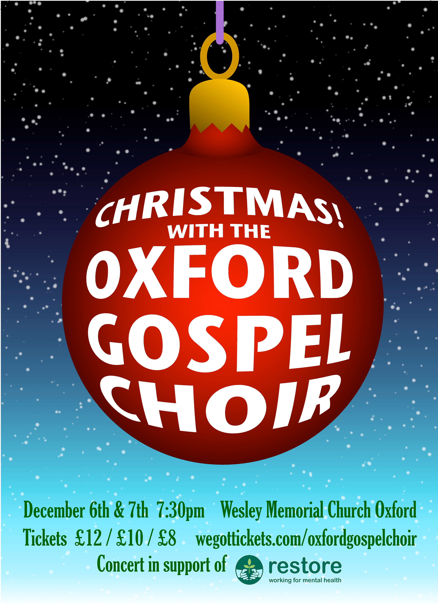

Oxford Gospel Choir, now in its fourteenth year, is a community choir with an ‘all welcome’ code and a repertoire of uplifting Gospel music. The choir, which has between 90 – 140 members, consists of a huge variety of friendly and social Oxford based singers of all beliefs and ages, who really embrace the community and fun emphasis to the choir.
We sing a variety of styles from traditional and contemporary gospel, popular chart songs to African spirituals and everything in between.
Tickets are now on sale for our next concert from WeGotTickets.
We look forward to seeing you there!
Visit our Facebook page to keep up with our latest news and events.
Email us at to get in touch.
Oxford Gospel Events Choir is an enthusiastic group of semi-professional singers specialising in gospel and modern vocal styles. We regularly perform at weddings, parties, festivals, and corporate events.
Email us at to enquire about hiring the events choir for your event, or visit our Facebook page to keep up with our latest news and events.